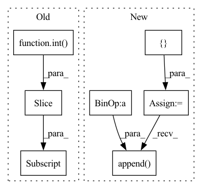

Pattern ID :15591

Before Change
//output_text = context_text
// This is for the mode: gClC_R, which performs worse
input_text = " ".join( citing_text.split()[ : int( self.max_input_length*0.5 * 0.7 ) ] ) + self.sep_token + context_text
output_text = candidate_text
elif self.cr_mode == "global":
After Change
irrelevance_levels_list = np.array( [ self.irrelevance_level_for_positive if candidate_id in positive_ids_set else self.irrelevance_level_for_negative for candidate_id in candidate_id_list ] ).astype(np.float32)
query_text_list = []
candidate_text_list = []
for candidate_id in candidate_id_list:
candidate_text = self.get_paper_text( candidate_id )
query_text_list.append( context_text + self.sep_token + citing_text )
candidate_text_list.append( candidate_text )
encoded_seqs = self.tokenizer( query_text_list,candidate_text_list, max_length = self.max_input_length , padding = self.padding , truncation = self.truncation)
In pattern: SUPERPATTERN
Frequency: 3
Non-data size: 7
Instances
Fragment ID: 52821493
Project Name: nianlonggu/local-citation-recommendation
Commit Name: 98ea5c240bc812adf7cdcc2aca4fbcab9f59993c
Time: 2022-11-09
Author: nianlonggu@gmail.com
File Name: src/rerank/datautils.py
M Class Name: RerankDataset
N Class Name: RerankDataset
M Method Name: __getitem__(2)
N Method Name: __getitem__(2)
M Parent Class: Dataset
N Parent Class: Dataset
M File Name: src/rerank/datautils.py
N File Name: src/rerank/datautils.py
M Start Line: 61
M End Line: 114
N Start Line: 60
N End Line: 95
'>
Before Change
//output_text = context_text
// This is for the mode: gClC_R, which performs worse
input_text = " ".join( citing_text.split()[ : int( self.max_input_length*0.5 * 0.7 ) ] ) + self.sep_token + context_text
output_text = candidate_text
elif self.cr_mode == "global":
After Change
irrelevance_levels_list = np.array( [ self.irrelevance_level_for_positive if candidate_id in positive_ids_set else self.irrelevance_level_for_negative for candidate_id in candidate_id_list ] ).astype(np.float32)
query_text_list = []
candidate_text_list = []
for candidate_id in candidate_id_list:
candidate_text = self.get_paper_text( candidate_id )
query_text_list.append( context_text + self.sep_token + citing_text )
candidate_text_list.append( candidate_text )
encoded_seqs = self.tokenizer( query_text_list,candidate_text_list, max_length = self.max_input_length , padding = self.padding , truncation = self.truncation)
'>
Fragment ID: 52821495
Project Name: nianlonggu/local-citation-recommendation
Commit Name: 98ea5c240bc812adf7cdcc2aca4fbcab9f59993c
Time: 2022-11-09
Author: nianlonggu@gmail.com
File Name: src/rerank/.ipynb_checkpoints/datautils-checkpoint.py
M Class Name: RerankDataset
N Class Name: RerankDataset
M Method Name: __getitem__(2)
N Method Name: __getitem__(2)
M Parent Class: Dataset
N Parent Class: Dataset
M File Name: src/rerank/.ipynb_checkpoints/datautils-checkpoint.py
N File Name: src/rerank/.ipynb_checkpoints/datautils-checkpoint.py
M Start Line: 61
M End Line: 114
N Start Line: 60
N End Line: 95
'>
Before Change
for i in range(self.num_hadamard):
vec = self.irht(vec, int(seed + (self.num_hadamard - 1) - i))
return (scale * vec)[:int(dim)].cpu().numpy()
// packing the quantization values to bytes
def to_bits(self, int_bool_vec):
After Change
total_dim = int(metadata[1])
curr_index = 0
vec = []
for k in range(2, max(metadata.keys()) + 1, 2):
scale = metadata[k]
dim = int(metadata[k + 1])
vec.append(self.decompress_slice(bins[curr_index:curr_index + dim], scale, dim, seed))
curr_index += dim
vec = torch.cat(vec)
vec = vec[:total_dim]
'>
Fragment ID: 52821486
Project Name: intel/openfl
Commit Name: c10577cb32201c45846d920f871e4bcab76e37ed
Time: 2023-01-13
Author: 30897761+yanivbi@users.noreply.github.com
File Name: openfl/pipelines/eden_pipeline.py
M Class Name: Eden
N Class Name: Eden
M Method Name: decompress(3)
N Method Name: decompress(5)
M Parent Class:
N Parent Class:
M File Name: openfl/pipelines/eden_pipeline.py
N File Name: openfl/pipelines/eden_pipeline.py
M Start Line: 252
M End Line: 260
N Start Line: 337
N End Line: 354